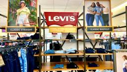

Retail Dive - Latest News
https://www.retaildive.com/news/
Retail Dive provides news and analysis for retail executives. We cover topics like retail tech, marketing, e-commerce, logistics, in-store operations, corporate retail news, and more.
フィード
Virtual try on launches on ChatGPT
Retail Dive - Latest News
Users can take or upload a selfie to generate images and see how clothing and accessories look on them prior to purchase.
1日前
Nearly half of shoppers are worried about affording holiday gifts this year
Retail Dive - Latest News
Concerns about the job market, as well as personal and household debt, are affecting how much consumers plan to spend this season, per an ICSC report.
1日前
The Weekly Closeout: E.l.f. Brands pushes into fragrance and is Athleta’s C-suite shakeup an opportunity?
Retail Dive - Latest News
The beauty brand has launched its first fragrance and body care collection, while the Gap Inc. brand is searching for a new CEO after Maggie Gauger went to Lululemon.
1日前
Bloomingdale’s merchant jumps to Bluemercury
Retail Dive - Latest News
Stacie Borteck Dattner will report to Bluemercury CEO Alexandre Choueiri, the former Kering Beauté executive who arrived in August.
1日前
Online spend during Amazon’s Prime Big Deal Days neared $10B in the US
Retail Dive - Latest News
The retailer’s two-day event drove sales at multiple stores including Walmart as consumers hunted for bargains and discounts ahead of the holiday rush.
1日前

Wholesale, tariff refunds deliver for Levi’s in rough Q3
Retail Dive - Latest News
The denim maker’s direct-to-consumer sales were unexpectedly weak, and profits and margins were propped up by the trade reimbursements.
2日前
Arc’teryx opens concept store devoted to climbing
Retail Dive - Latest News
The new Los Angeles-area location includes a climbing wall, a lounge and an outdoor patio, and was created in partnership with local climbing club partners.
2日前
Amazon retail division hit by job cuts
Retail Dive - Latest News
The e-commerce giant is changing the structure of its stores business, impacting hundreds of employees.
2日前
Lululemon has ‘a great deal to prove’ with new exec lineup
Retail Dive - Latest News
With two new C-suite leaders announced, and a search underway for others, change is afoot at Lululemon. Here’s what analysts think of Heidi O’Neill’s first move as CEO.
2日前
AI is ‘reshaping’ Walmart and Sparky is leading the charge
Retail Dive - Latest News
Advancements in AI are helping Walmart save money, which it is, in turn, reinvesting in customer experience improvements, according to U.S. CEO David Guggina.
2日前